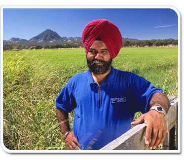

Your first goal at a recruiting event or effort is to establish the credibility of the agency. Candidates should see being a part of NRCS as an opportunity to contribute to society and the environment in a very direct way. They should also see it as the “Best Place to Work” while accomplishing a mission of conservation.
It is therefore imperative that you establish credibility, as the representative of NRCS. You should be knowledgeable about the agency and its culture. You should know what positions are available now and in the future and the nature of the work required by employees in those positions.